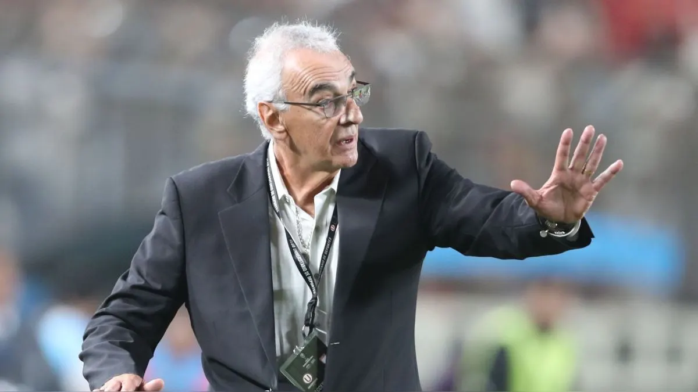
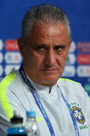
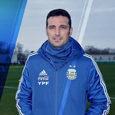
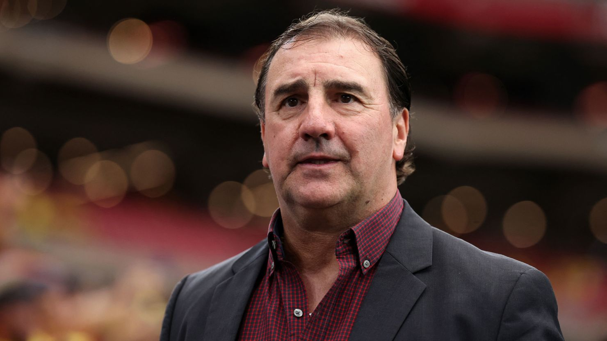
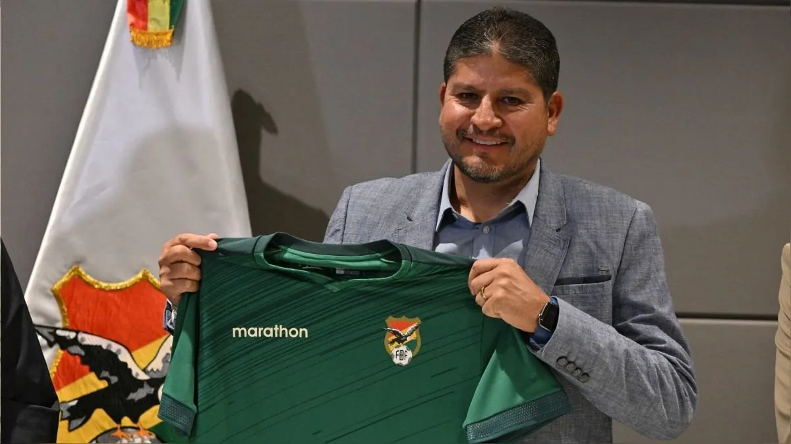
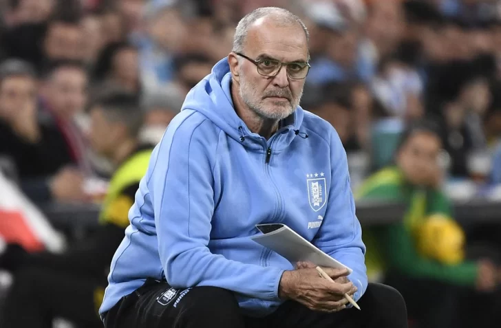
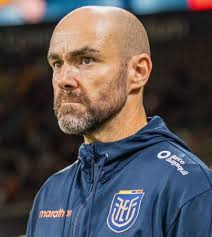
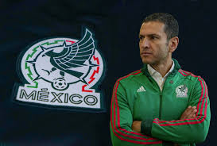
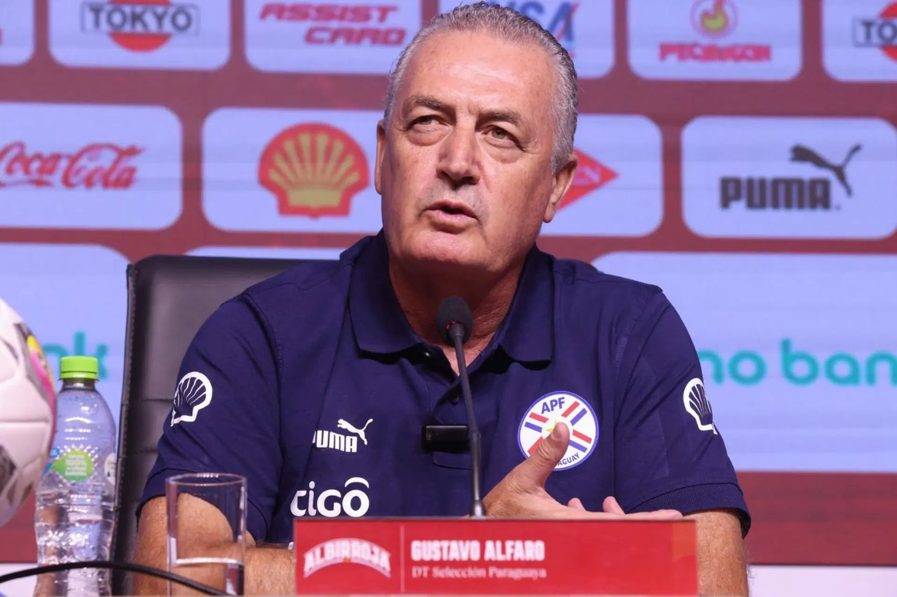

PERU
El entrenador de la Selección de Perú, Jorge Fossati, apostó por una convocatoria de 26 jugadores para la novena y décima fecha de las Eliminatorias para el Mundial 2026, donde Perú recibirá a Uruguay en Lima y luego visitará a Brasil en Brasilia.
BRASIL
Dorival Silvestre Júnior nació el 25 de abril de 1952 en Araraquara, municipio del estado de São Paulo. Inspirado por su tío Olegário Tolói de Oliveira (Dudu), uno de los grandes ídolos del Palmeiras, empezó su carrera como futbolista en el Ferroviária y en su carrera tuvo paso por distintos clubes, destacándose algunas temporadas en el Palmeiras y en el Grêmio, donde fue dirigido por Luiz Felipe Scolari. Su retiro fue en Botafogo de Ribeirao Preto en 1999 y apenas unas temporadas después en 2002, comenzó su carrera como DT. A simple vista la cifra impacta o al menos llama la atención. Desde 2002, con su inicio como DT de Ferroviária, hasta 2024, con su último paso en el São Paulo, previo a la llegada del banquillo de Brasil, Dorival dirigió 25 equipos en 22 años de carrera.
CHILE
Biografía. El DT de la selección chilena nació 10 de febrero de 1958 en el barrio de Mataderos, en Argentina. Pero conoció por primera vez el fútbol en Tapiales, Buenos Aires. A sus cortos 13 años, Ricardo Gareca empezó a jugar el fútbol como volante en las divisiones inferiores de Boca Juniors. Durante su adolescencia solo trabajó como enfardador de papel en la fábrica donde su padre era capataz. En su biografía queda registrado los 208 goles que marcó en partidos nacionales e internacionales. En 1978, el ‘Flaco’ debutó como futbolista del Boca Juniors en un partido contra Rosario Central. Después de dos años desde que empezó a jugar para el club, Ricardo Gareca decidió retirarse al Sarmiento de Junín porque no le permitían jugar mucho en el equipo Xeneize.

ARGENTINA
Lionel Scaloni nació en Santa Fe, Argentina, en 1978 y fue jugador de seleccionado: con el Sub-20 se consagró campeón en el Mundial de Malasia 1997 y con la Mayor disputó la Copa Mundial de la FIFA 2006.
COLOMBIA
Nestor Lorenzo, ex futbolista y entrenador del fútbol argentino, nació en Villa Celina, una Provincia de Buenos Aires, Argentina, el 28 de febrero de 1966. Actualmente, es uno de los directores técnicos más elogiados por Colombia después de lograr un récord invicto de 25 partidos con la selección colombiana. “Un hombre transparente, que tiene un alto sentido de humanidad hacia el otro y una sensibilidad para entender y ayudar al prójimo que hacen que sus dirigidos y su cuerpo técnico lo quieran y apoyen a muerte” así lo describió el ex jugador Abel Aguilar.En el 2022, la Federación Colombiana de Fútbol (FCF) informó que Lorenzo sería el reemplazo de Reinaldo Rueda para la dirección de la Selección Colombia masculina de mayores. Desde entonces, dejó de ser director técnico del Club Melgar de Perú para dedicarse únicamente al equipo colombiano. Sin embargo, no era un selección a la cual desconociera su trabajo, pues en los ciclos del mundial de 2014 (Brasil) y 2018 (Rusia) Lorenzo fue asistente técnico del profe José Néstor Pékerman.
BOLIVIA
Nacido en Cochabamba en 1970, Villegas fue futbolista entre 1987 y 1997 y en 2002 inició su carrera como entrenador. Dirigió a Aurora, Bolívar y Always Ready, en los dos últimos casos, tanto de las divisiones menores como de los planteles profesionales.
URUGUAY
Marcelo Alberto Bielsa (Rosario, 21 de julio de 1955), es un exfutbolista y entrenador argentino. Actualmente dirige a la selección de fútbol de Uruguay.
ECUADOR
"¡Bienvenido Sebastián Beccacece!", publicó la FEF en su cuenta en la red social X junto a una fotografía del entrenador, de 43 años, nacido en Rosario, Argentina. La FEF no dio detalles de la contratación de Beccacece, quien en principio, comandaría al seleccionado nacional hasta el Mundial de 2026.
MEXICO
Javier Aguirre antes de ser un entrenador trotamundos en el medio futbolístico, fue un jugador surgido de las inferiores de Coapa, llegando a disputar la Copa del Mundo de México 1986 y probar suerte en el futbol europeo, concretamente en el Osasuna, donde la suerte no le sonrió, cosa que si pasaría 20 años después, cuando clasifico al cuadro rojillo a la Liga de Campeones del año 2006.Javier Aguirre comenzó su carrera como DT en el año de 1994, cuando formo parte del cuerpo técnico de Miguel Mejía Barón, previo al mundial de USA 1994, luego de esa aventura se fue a preparar a España. Posteriormente dirigió a los Tuzos del Pachuca en 1998, para ganar el torneo de invierno de 1999 y en 2001 dirigir la selección nacional.
PARAGUAY
Alfaro, de 62 años, asume el banquillo paraguayo tras comandar las selecciones de Costa Rica, desde noviembre de 2023 y donde cosechó cinco triunfos, dos empates y cuatro derrotas en un total de once partidos disputados, y de Ecuador, entre agosto de 2020 y enero de 2023
